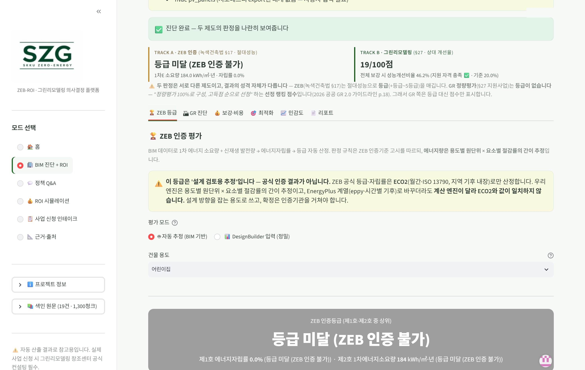
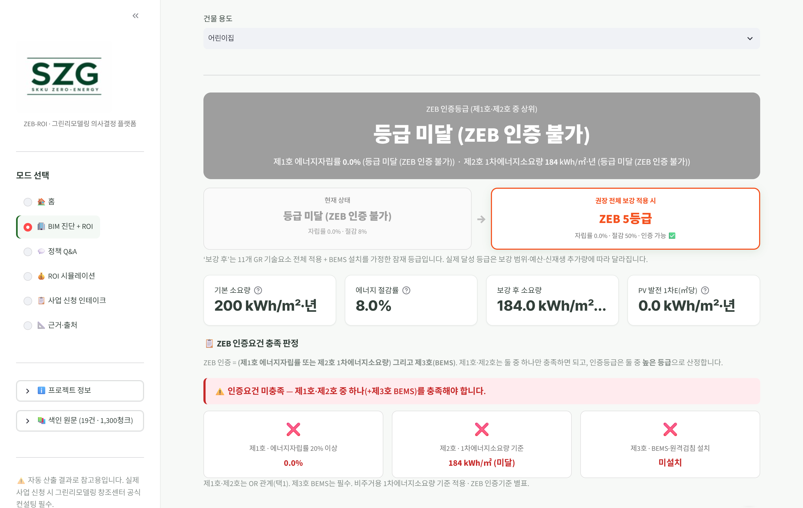
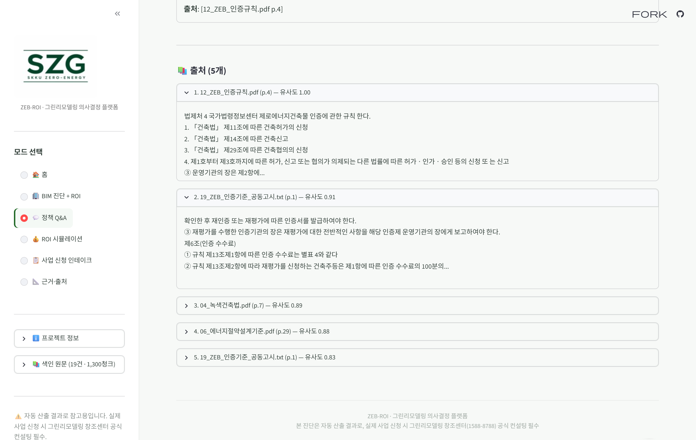
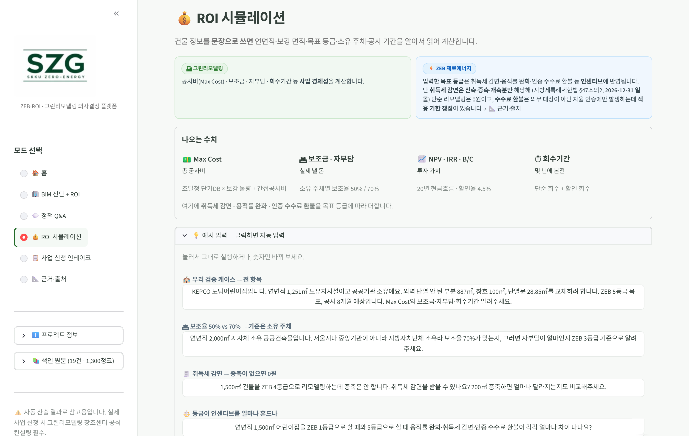
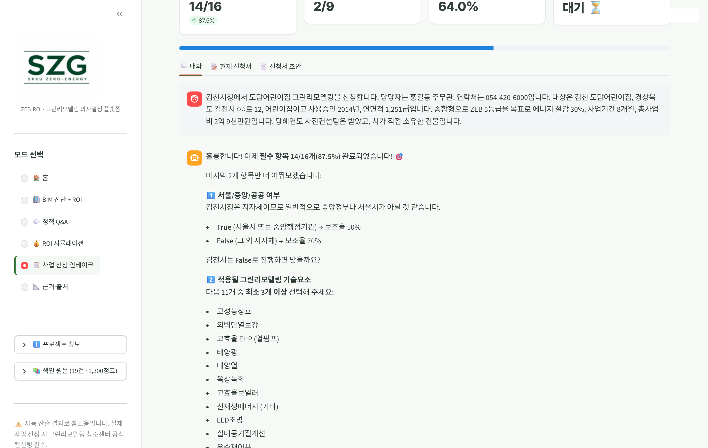
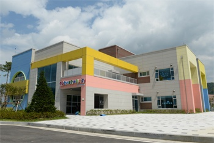
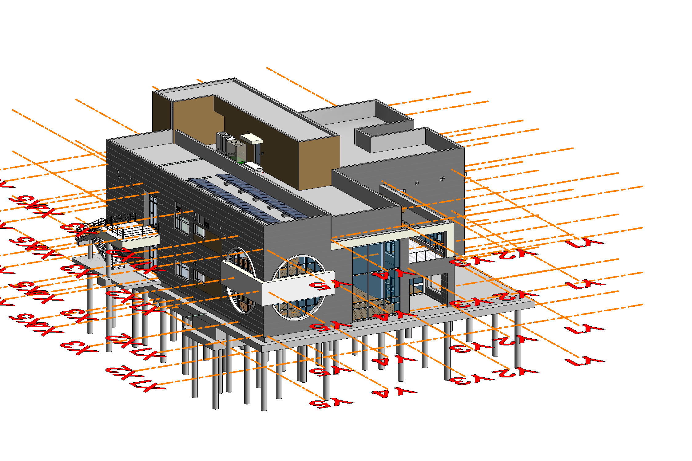

<meta charset="utf-8">
<title>ZEB-ROI 아이디어 기획서</title>
<style>
/* ─────────────────────────────────────────────────────────────
   ZEB-ROI 아이디어 기획서 — 배포용(PDF로 읽는 문서)

   Pillow에서 옮겨 온 이유
   · 둥근 모서리 안티에일리어싱이 거칠어 확대하면 계단이 보였다
   · 칼럼 높이를 손으로 역산해서 아래끝이 들쭉날쭉해지곤 했다 → flex가 맞춰 준다
   · PDF로 뽑으면 글자가 벡터라 배포용으로 훨씬 낫다

   캔버스 1280×720 CSS px = PowerPoint 16:9(13.333in). 1px = 0.75pt.
   본문 16px = 12pt (배포용 하한 11pt).

   디자인 규칙 — '흰 카드 + 회색 테두리 + 왼쪽 초록 기둥'을 전부 걷어냈다.
   비교·나열은 선과 여백으로만 하고, 결론은 상자 대신 큰 문장으로 쓴다.
   상자를 남긴 곳은 두 군데뿐 — 09~12의 브라우저 창(이건 '웹서비스'라는 정보다)과
   14장의 상태 알약(확정/폐지/확인 필요는 상태 그 자체가 정보다).

   말투 규칙 — 완결된 생각이면 합니다체, 이름이나 항목이면 명사형. 반말은 안 쓴다.
     h1 제목        합니다체 완결 문장 · 마침표 없음
     .sub 부제목    합니다체 완결 문장 · 마침표 있음
     h3 · k · em    명사형(조사 없이 끊음) · 마침표 없음
     li · .qa p     명사형 · 마침표 없음
     p · span 설명  합니다체 · 마침표 있음
     .say 결론      합니다체 · 마침표 있음
     .lb 캡처 라벨  명사형 · 마침표 없음
     .ft 각주       명사형 나열 · 마침표 없음
     .chap .q       "~까요?" 물음 — 서술은 합니다체(써냅스 회사소개서와 같은 결)로 두되
                    챕터 질문만 한 단계 낮춘다. 이 장치를 가져온 SDP 강연 덱이
                    "오늘은 무슨 얘기 하나요?"처럼 해요체 물음을 쓴다.
   ───────────────────────────────────────────────────────────── */
:root {
  --ink:  #12201A;
  --green:#0F4A3B;
  --bg:   #EFF5F1;
  --card: #FFFFFF;
  --g1:   #5C665F;   /* 본문 회색 */
  --g2:   #6F7C75;   /* 보조 — 배경 위 4.4:1 */
  --g3:   #C4D3CB;   /* 선 */
  --chev: #96B2A5;   /* 갈매기 — g3로 두면 배경에 묻힌다 */
}
* { box-sizing: border-box; margin: 0; padding: 0; }
body { background: #6b7772; }

/* Pretendard — SIL OFL.
   ★ 가변 글꼴(PretendardVariable.ttf)이 아니라 굵기별 정적 파일을 쓴다.
     가변 글꼴을 물리면 Chrome이 PDF에 Type3(글리프를 그림 명령으로 푼 것)로 넣어
     파일이 5.3MB까지 부풀고 뷰어에 따라 렌더가 흔들린다. 정적 파일은 CID TrueType
     부분집합으로 정상 임베딩된다.
   Noto Sans KR에 없던 ᵢ · ₂ 같은 아래첨자도 들어 있어 두부(☒)가 안 난다. */
@font-face { font-family: "Pretendard"; font-weight: 400; font-display: block;
  src: url("fonts/Pretendard-Regular.ttf") format("truetype"); }
@font-face { font-family: "Pretendard"; font-weight: 500; font-display: block;
  src: url("fonts/Pretendard-Medium.ttf") format("truetype"); }
@font-face { font-family: "Pretendard"; font-weight: 700; font-display: block;
  src: url("fonts/Pretendard-Bold.ttf") format("truetype"); }
@font-face { font-family: "Pretendard"; font-weight: 800; font-display: block;
  src: url("fonts/Pretendard-ExtraBold.ttf") format("truetype"); }

.slide {
  position: relative;
  width: 1280px; height: 720px;
  background: var(--bg);
  color: var(--ink);
  font-family: "Pretendard", "Noto Sans KR", "맑은 고딕", sans-serif;
  font-weight: 400;
  padding: 42px 64px 0;
  overflow: hidden;
  -webkit-font-smoothing: antialiased;
  /* 한글은 기본값(break-word 계열)이면 어절 한가운데서 잘린다.
     "붙습니 / 다." 처럼 마지막 줄에 한 글자만 남는 걸 막는다. */
  word-break: keep-all;
  overflow-wrap: break-word;
}
@media print { .slide { page-break-after: always; } }

/* ── 머리말 바 ─────────────────────────────── */
.hd { display: flex; justify-content: space-between; align-items: baseline;
      font-size: 12.5px; font-weight: 500; letter-spacing: 1.6px; color: var(--g2); }
.rule { height: 1px; background: var(--g3); margin-top: 16px; }
/* 굵기 폭은 위쪽만 벌린다. 얇은 굵기는 '큰 글씨'에만 쓰는 게 원래 규칙이고,
   15px 회색 본문을 350까지 내리면 색 대비와 획 굵기가 같이 떨어져 인쇄본에서 흐려진다. */
h1 { font-size: 30px; font-weight: 800; letter-spacing: -0.035em; margin-top: 20px;
     line-height: 1.25; }
.sub { font-size: 15.5px; color: var(--g1); margin-top: 12px; line-height: 1.55; }
.note { font-size: 13px; color: var(--g2); }
.ft { position: absolute; left: 64px; right: 64px; bottom: 20px;
      border-top: 1px solid var(--g3); padding-top: 12px;
      font-size: 12px; color: var(--g2); }
</style>
<link rel="stylesheet" href="slides-a.css">
<link rel="stylesheet" href="slides-b.css">
<link rel="stylesheet" href="slides-c.css">


<!-- ══════════════ 01 · 표지 ══════════════ -->
<section class="slide" id="s01">
  <div class="cover">
    <div class="eyebrow">IDEA PROPOSAL &nbsp;·&nbsp; 2026</div>
    <div class="rule"></div>

    <div class="mid">
      <div class="left">
        <h1>ZEB-ROI</h1>
        <div class="tag">BIM 한 번으로 ZEB 인증 등급과<br>그린리모델링 사업성을 함께 판정하는 의사결정 플랫폼</div>
      </div>
      <div class="art"><svg viewBox="0 0 470 520" fill="none" font-family="Pretendard">
  <!-- 05장의 갈래 그림과 같은 문법 — 초록 알약 대신 선과 글자만.
       괄호 안을 비워 두지 않으려고 갈래 폭을 152px로 좁히고
       오른쪽에 실제 결과물 이름을 앉혔다. -->
  <g stroke="var(--g3)" stroke-width="1.4">
    <path d="M60 260 H150"/><path d="M150 184 V336"/>
    <path d="M150 184 H228"/><path d="M150 336 H228"/>
  </g>
  <circle cx="60" cy="260" r="6" fill="var(--green)"/>
  <path d="M228 177 L240 184 L228 191 Z" fill="var(--chev)"/>
  <path d="M228 329 L240 336 L228 343 Z" fill="var(--chev)"/>

  <text x="60" y="230" fill="var(--g2)" font-size="11.5" font-weight="500"
        letter-spacing="1.4">INPUT</text>
  <text x="60" y="294" fill="var(--g1)" font-size="14.5">gbXML</text>

  <text x="252" y="180" fill="var(--ink)" font-size="18" font-weight="700"
        letter-spacing="-0.3">ZEB 인증 등급</text>
  <text x="252" y="202" fill="var(--g2)" font-size="13.5">플러스등급 ~ 5등급</text>

  <text x="252" y="332" fill="var(--ink)" font-size="18" font-weight="700"
        letter-spacing="-0.3">GR 정량평가</text>
  <text x="252" y="354" fill="var(--g2)" font-size="13.5">100점 · 고득점 순 선정</text>
</svg></div>
    </div>

    <div class="meta">
      <b>성제건 (1398)</b> &nbsp;·&nbsp; 성균관대학교 건설환경공학부<br>
      zeb-bim-tool.streamlit.app
    </div>
  </div>
</section>

<!-- ══════════════ 챕터 01 ══════════════ -->
<section class="slide dark chap" id="c1">
  <div class="kk">CHAPTER 01</div>
  <div class="q">제도는 정해졌습니다.<br>이 건물은 <u>기준을 넘을까요?</u></div>
  <div class="toc">
    <div class="on"><i>01</i>PROBLEM</div>
    <div><i>02</i>SOLUTION</div>
    <div><i>03</i>RELIABILITY</div>
    <div><i>04</i>VALIDATION</div>
  </div>
</section>

<!-- ══════════════ 02 · 이어지지 않는 두 제도 ══════════════ -->
<section class="slide" id="s02">
  <div class="hd"><span>PROBLEM&nbsp; |&nbsp; 이어지지 않는 두 제도</span><span>02</span></div>
  <div class="rule"></div>
  <h1>BIM에 이미 있는 값을 ZEB 평가에서 다시 손으로 넣습니다</h1>
  <div class="sub">두 의무화가 나란히 굴러가지만, 둘을 잇는 자리는 비어 있습니다.</div>

  <div class="gap2">
    <div class="pil">
      <k>의무화 01</k>
      <h3>ZEB 인증</h3>
      <ul>
        <li><b>2025.1.1</b>부터 연면적 1,000㎡ 이상 공공건축물 <b>ZEB 4등급 이상</b></li>
        <li>민간 1,000㎡ 이상 · 30세대 이상 공동주택은 <b>5등급 수준 설계</b></li>
        <li>미취득 시 과태료 50만원</li>
      </ul>
    </div>
    <div class="mid2">
      <div class="qq">?</div>
      <span>둘을 잇는 자리</span>
    </div>
    <div class="pil">
      <k>의무화 02</k>
      <h3>BIM 적용</h3>
      <ul>
        <li><b>1,000억원 이상</b> 신규 공공공사는 전 과정 BIM</li>
        <li><b>2026년 500억</b> 이상 → <b>2028년 300억</b> 이상으로 확대</li>
        <li>공동주택은 2024년 100% 시행</li>
      </ul>
    </div>
  </div>

  <div class="say">건물 정보는 이미 디지털로 쌓이는데, ZEB 평가는 <u>그 값을 사람이 다시 손으로 입력</u>합니다.</div>
  <div class="ft">근거 · 녹색건축물 조성 지원법 시행령 &nbsp;|&nbsp; 국토교통부 「건설산업 BIM 기본지침」 · 「2030 건축 BIM 활성화 로드맵」</div>
</section>

<!-- ══════════════ 03 · 제도 · 모수 · 예산 ══════════════ -->
<section class="slide" id="s03">
  <div class="hd"><span>PROBLEM&nbsp; |&nbsp; 수요는 확정됐고 모수는 이미 있다</span><span>03</span></div>
  <div class="rule"></div>
  <h1>판단할 도구가 없습니다</h1>

  <div class="stat3">
    <div>
      <k>제도가 민다</k>
      <div class="v">4등급</div>
      <div class="u">2025년부터 공공 의무</div>
      <div class="dt">
        <div><i>2025</i><span>공공 <b>1,000㎡↑</b> ZEB 4등급</span></div>
        <div><i>민간</i><span>1,000㎡↑ · 30세대↑ <b>5등급 설계</b></span></div>
        <div><i>BIM</i><span>2026년 <b>500억</b> → 2028년 <b>300억</b></span></div>
      </div>
      <div class="cm">기준 금액이 해마다 내려옵니다</div>
    </div>
    <div>
      <k>모수가 크다</k>
      <div class="v">44.4%</div>
      <div class="u">전국 724만 동 중 30년 초과</div>
      <div class="dt">
        <div><i>비수도권</i><span><b>47.1%</b></span></div>
        <div><i>수도권</i><span>37.7%</span></div>
        <div><i>교육·사회용</i><span><b>26.4%</b></span></div>
      </div>
      <div class="cm">어린이집이 이 구간에 있습니다</div>
    </div>
    <div>
      <k>예산이 열렸다</k>
      <div class="v">1,688억</div>
      <div class="u">2026 공공 그린리모델링 2.0</div>
      <div class="dt">
        <div><i>공공 GR 2.0</i><span><b>1,688억</b></span></div>
        <div><i>민간 이자지원</i><span>25억 → <b>135억</b></span></div>
        <div><i>부가 혜택</i><span>용적률 완화 · 취득세 감면(증축분)</span></div>
      </div>
      <div class="cm">공공은 공사비의 50%까지 지원됩니다</div>
    </div>
  </div>

  <div class="say">대상도 예산도 정해졌습니다. 남은 것은 <u>“이 건물이 되는가”</u>를 판단하는 일입니다.</div>
  <div class="ft">출처 · 국토교통부 건축물 현황 통계(2024년 말) &nbsp;|&nbsp; 2026년 「공공건축물 그린리모델링 2.0」 사업 공모 &nbsp;|&nbsp; 제로에너지건축물 인증 의무화 로드맵</div>
</section>

<!-- ══════════════ 챕터 02 ══════════════ -->
<section class="slide dark chap" id="c2">
  <div class="kk">CHAPTER 02</div>
  <div class="q">그럼 그 판단은 <u>무엇으로</u> 할까요?</div>
  <div class="toc">
    <div><i>01</i>PROBLEM</div>
    <div class="on"><i>02</i>SOLUTION</div>
    <div><i>03</i>RELIABILITY</div>
    <div><i>04</i>VALIDATION</div>
  </div>
</section>

<!-- ══════════════ 04 · End-to-End ══════════════ -->
<section class="slide" id="s04">
  <div class="hd"><span>SOLUTION&nbsp; |&nbsp; End-to-End</span><span>04</span></div>
  <div class="rule"></div>
  <h1>gbXML로 시작해 신청서 초안으로 끝납니다</h1>
  <div class="sub">설치 없이 주소만으로 접속해, 파일 하나를 올리면 판정부터 신청서까지 한 흐름으로 이어집니다.</div>

  <div class="tline">
    <span class="cv" style="left:20%"></span>
    <span class="cv" style="left:40%"></span>
    <span class="cv" style="left:60%"></span>
    <span class="cv" style="left:80%"></span>
    <div><div class="dot io"></div><k>INPUT</k><b>gbXML 업로드</b>
      <i>Revit 내보내기 · 드래그앤드롭</i></div>
    <div><div class="dot"></div><k>STEP 01</k><b>읽고 거르기</b>
      <i>부재 · 좌표 · 열관류율 추출<br>못 믿을 파일은 중지</i></div>
    <div><div class="dot"></div><k>STEP 02</k><b>두 제도로 판정</b>
      <i>ZEB 등급 · GR 정량평가<br>근거 조항과 함께</i></div>
    <div><div class="dot"></div><k>STEP 03</k><b>보강과 경제성 확인</b>
      <i>공사비 · 보조금 · 자부담<br>NPV · IRR · 회수기간</i></div>
    <div><div class="dot io"></div><k>OUTPUT</k><b>신청서 초안 제작</b>
      <i>근거·출처 첨부</i></div>
  </div>

  <div class="tspan">
    <div style="flex:4"><span class="bk"></span><em>MODE 03</em><b>BIM 진단 + ROI</b></div>
    <div style="flex:1"><span class="bk"></span><em>MODE 04</em><b>사업 신청 인테이크</b></div>
  </div>

  <div class="say">중간에 파일을 주고받거나 <u>프로그램을 설치할 일이 없습니다.</u></div>
  <div class="ft">근거 · ZEB 인증기준 공동고시 &nbsp;|&nbsp; GR 지원사업 운영고시 §9 &nbsp;|&nbsp; 조달청 시설공통자재 단가 · 간접공사비 기준(2026)</div>
</section>

<!-- ══════════════ 05 · 아키텍처 ══════════════ -->
<section class="slide" id="s05">
  <div class="hd"><span>CORE TECHNOLOGY&nbsp; |&nbsp; 구조</span><span>05</span></div>
  <div class="rule"></div>
  <h1>해석 · 단가 · 법령은 하나만 둡니다</h1>
  <div class="sub">판정만 두 갈래로 나누고, 해석 · 단가 · 법령은 하나만 둡니다.</div>

  <div class="zones">
    <span style="width:232px">INPUT</span>
    <span style="width:60px"></span>
    <span style="width:320px">공유 코어 · 하나만 존재</span>
    <span style="width:176px">판정 · 산정</span>
    <span>OUTPUT</span>
  </div>

  <div class="arch">
    <div class="acol" style="width:232px">
      <div class="ai"><b>gbXML (Revit)</b></div>
      <div class="ai"><b>데모 케이스 4종</b></div>
      <div class="ai"><b>자연어 문장</b></div>
    </div>

    <div class="frk" style="width:60px">
      <svg viewBox="0 0 60 292"><g fill="none" stroke="var(--g3)" stroke-width="1.2">
        <path d="M10 146 H38"/></g>
        <path d="M38 139 L48 146 L38 153 Z" fill="var(--chev)"/></svg>
    </div>

    <div class="acol" style="width:320px">
      <div class="ai"><b>gbXML 파서</b><i>부재 · 좌표 · 열관류율</i></div>
      <div class="ai"><b>EnergyPlus 25.1</b><i>IDF 직접 생성 · 별도 서비스에서 실행</i></div>
      <div class="ai"><b>단가 DB</b><i>조달청 자재 442종</i></div>
      <div class="ai"><b>법령 RAG</b><i>원문 19건 · 1,300청크</i></div>
    </div>

    <div class="frk" style="width:176px">
      <svg viewBox="0 0 176 292"><g fill="none" stroke="var(--g3)" stroke-width="1.2">
        <path d="M12 146 H52"/><path d="M52 24 V268"/>
        <path d="M52 24 H144"/><path d="M52 97 H144"/>
        <path d="M52 195 H144"/><path d="M52 268 H144"/></g>
        <g fill="none" stroke="var(--chev)" stroke-width="1.6">
          <path d="M168 8 V41"/><path d="M168 56 V138"/>
          <path d="M168 154 V236"/><path d="M168 251 V284"/></g>
        <path d="M144 17 L156 24 L144 31 Z" fill="var(--chev)"/>
        <path d="M144 90 L156 97 L144 104 Z" fill="var(--chev)"/>
        <path d="M144 188 L156 195 L144 202 Z" fill="var(--chev)"/>
        <path d="M144 261 L156 268 L144 275 Z" fill="var(--chev)"/></svg>
      <span style="top:2px;   left:58px">ZEB 인증</span>
      <span style="top:75px;  left:58px">그린리모델링</span>
      <span style="top:173px; left:58px">ROI 산정</span>
      <span style="top:246px; left:58px">사업 신청 인테이크</span>
    </div>

    <div class="acol" style="flex:1">
      <div class="ai o"><b>ZEB 인증 등급</b></div>
      <div class="ai o"><b>GR 정량평가 점수</b></div>
      <div class="ai o"><b>보강 우선순위</b></div>
      <div class="ai o"><b>공사비 · 보조금 · 자부담</b></div>
      <div class="ai o"><b>NPV · IRR · B/C · 회수</b></div>
      <div class="ai o"><b>신청서 초안 · 근거·출처</b></div>
    </div>
  </div>

  <div class="note" style="margin-top:20px">※&nbsp; 입력 검증. 못 믿을 파일은 진단을 시작하지 않습니다. 좌표가 없는 모델은 에너지 해석을 건너뛰고 진단 · 공사비 · 경제성까지만 수행합니다.</div>
  <div class="say" style="margin-top:16px">두 제도의 답은 다릅니다. 다만 그 차이는 <u>제도가 다르기 때문</u>이지, 우리가 단가나 해석값을 두 번 계산해서가 아닙니다.</div>
  <div class="ft">근거 · ZEB 인증기준 공동고시 [별표2] &nbsp;|&nbsp; GR 지원사업 운영고시 §9 &nbsp;|&nbsp; 2026 공공 GR 2.0 가이드라인 p.18</div>
</section>

<!-- ══════════════ 06 · 두 트랙 ══════════════ -->
<section class="slide" id="s06">
  <div class="hd"><span>CORE TECHNOLOGY&nbsp; |&nbsp; 두 트랙</span><span>06</span></div>
  <div class="rule"></div>
  <h1>두 제도는 서로 다른 것을 묻습니다</h1>
  <div class="sub">ZEB는 기준선을 넘었는지를 묻고, 그린리모델링은 얼마나 나아졌는지를 묻습니다.</div>

  <div class="trk">
    <div>
      <k>TRACK A</k>
      <h3>ZEB 인증</h3>
      <div class="q">절대 성능 · 기준선을 넘었는가</div>
      <div class="rw">
        <div><i>근거</i><span>ZEB 인증기준 공동고시 [별표2]</span></div>
        <div><i>판정</i><span>제1호 에너지자립률 또는 제2호 1차에너지소요량</span></div>
        <div><i>규칙</i><span>둘 중 상위 등급으로 확정 · 제3호 BEMS는 필수</span></div>
        <div><i>결과</i><span>플러스등급 ~ 5등급</span></div>
      </div>
      <div class="tl">기준을 넘으면 등급이 나옵니다. 남과 비교하지 않습니다.</div>
    </div>
    <div>
      <k>TRACK B</k>
      <h3>그린리모델링 지원사업</h3>
      <div class="q">상대 개선 · 얼마나 나아졌는가</div>
      <div class="rw">
        <div><i>근거</i><span>GR 지원사업 운영고시 §9 · 2026 공공 GR 2.0 [표1]</span></div>
        <div><i>판정</i><span>정량평가 100점 = 요소 80 + 사업여건 20</span></div>
        <div><i>규칙</i><span>가점 14 · 감점 −10 · 동점 시 별도 우선순위</span></div>
        <div><i>결과</i><span>등급 없음, 고득점 순으로 선정</span></div>
      </div>
      <div class="tl">등급이 아니라 순위입니다. 예산 한도까지 끊고,<br>마지막은 심의위원회를 거칩니다.</div>
    </div>
  </div>

  <div class="gapline">
    <div class="n1"><k>ZEB 절감률</k><v>50.5%</v></div>
    <div class="n1"><k>GR 성능개선비율</k><v>41.2%</v></div>
    <div class="sayr">한 건물에서 <u>9.3%p</u>가 벌어집니다.<br>한쪽 값을 다른 쪽 서류에 옮기면 그만큼 틀립니다.</div>
  </div>
  <div class="ft">근거 · ZEB 인증기준 공동고시 [별표2] &nbsp;|&nbsp; GR 지원사업 운영고시 §9 &nbsp;|&nbsp; 2026 공공 GR 2.0 가이드라인 [표1] p.18</div>
</section>

<!-- ══════════════ 07 · 차별점 ══════════════ -->
<section class="slide" id="s07">
  <div class="hd"><span>WHY US&nbsp; |&nbsp; 차별점</span><span>07</span></div>
  <div class="rule"></div>
  <h1>등급만 나오지 않습니다. 근거가 같이 나옵니다</h1>

  <div class="cols3">
    <div>
      <div class="no">01</div>
      <h3>두 제도를<br>한 번에 판정</h3>
      <p>같은 입력으로 ZEB 인증과 그린리모델링 지원사업을 동시에 판정합니다.</p>
      <em>판정은 분리, 기반은 공유</em>
    </div>
    <div>
      <div class="no">02</div>
      <h3>계산은 코드,<br>설명만 AI</h3>
      <p>같은 입력에 항상 같은 결과가 나오고, 틀렸을 때 어느 단계인지 되짚을 수 있습니다.</p>
      <em>지어낸 조항이 낄 자리 없음</em>
    </div>
    <div>
      <div class="no">03</div>
      <h3>값마다<br>근거를 공개</h3>
      <p>조항과 시행일을 화면에 적고, 폐지된 조항은 계산에서 뺐습니다.</p>
      <em>덜 유리해도 그대로 공개</em>
    </div>
  </div>

  <div class="vs">
    <div class="lb"><em>EXISTING</em>기존 방식</div>
    <div class="it">
      <b>ZEB 인증 대행 · 컨설팅</b>
      <span>ECO2에 방·외피·설비를 사람이 처음부터 입력합니다. 수일~수주 걸리고 입력자에 따라 결과가 달라집니다.</span>
    </div>
    <div class="it">
      <b>범용 에너지 해석 도구</b>
      <span>성능은 계산하지만 제도 판정은 하지 않아, 보조금 · 세제 · 신청서로 이어지지 않습니다.</span>
    </div>
  </div>

  <div class="say">그래서 남는 것이 등급 하나가 아닙니다. <u>그 등급이 나온 조항과 공사비와 신청서</u>까지 함께 남습니다.</div>
  <div class="ft">근거 · ZEB 인증기준 공동고시 [별표2] &nbsp;|&nbsp; 지방세특례제한법 제47조의2 &nbsp;|&nbsp; 녹색건축물 조성 지원법 제15조 · 시행령 제11조</div>
</section>

<!-- ══════════════ 08 · 모드 라인업 ══════════════ -->
<section class="slide" id="s08">
  <div class="hd"><span>SOLUTION&nbsp; |&nbsp; 모드 라인업</span><span>08</span></div>
  <div class="rule"></div>
  <h1>네 개 모드가 하나의 흐름이 됩니다</h1>
  <div class="sub">모드 번호가 아니라 <b>쓰는 순서</b>로 늘어놓았습니다. 진단으로 시작해 신청서로 끝납니다.</div>

  <div class="cols4">
    <div>
      <k>MODE 03</k>
      <h3>BIM 진단 + ROI</h3>
      <div class="qa">
        <em>무엇을 넣으면</em><p>gbXML 파일 또는 데모 케이스</p>
        <em>무엇이 나오는가</em><p>11개 기술요소 진단 · ZEB 등급 · GR 100점 · 보강 우선순위</p>
        <div class="lim"><em>무엇에 근거해</em><p>ZEB 인증기준 공동고시 [별표2] · 2026 공공 GR 2.0 [표1]</p></div>
      </div>
    </div>
    <div>
      <k>MODE 01</k>
      <h3>정책 Q&amp;A</h3>
      <div class="qa">
        <em>무엇을 넣으면</em><p>법령 질문을 문장 그대로</p>
        <em>무엇이 나오는가</em><p>원문 19건에서 찾은 조문 인용 · 파일명과 쪽수까지</p>
        <div class="lim"><em>무엇에 근거해</em><p>법·고시·공고 원문 19건을 조항 단위 1,300개로 색인</p></div>
      </div>
    </div>
    <div>
      <k>MODE 02</k>
      <h3>ROI 시뮬레이션</h3>
      <div class="qa">
        <em>무엇을 넣으면</em><p>도면 없이 조건을 문장으로</p>
        <em>무엇이 나오는가</em><p>공사비 상한 · 보조금 · 자부담 · NPV · IRR · 회수기간</p>
        <div class="lim"><em>무엇에 근거해</em><p>조달청 자재 442종 · 한국전력 기본공급약관 140.9원/kWh</p></div>
      </div>
    </div>
    <div>
      <k>MODE 04</k>
      <h3>사업 신청 인테이크</h3>
      <div class="qa">
        <em>무엇을 넣으면</em><p>공공 · 민간 중 해당 사업을 고르고 대화</p>
        <em>무엇이 나오는가</em><p>필수 항목 완성도 집계 · 신청서 초안</p>
        <div class="lim"><em>무엇에 근거해</em><p>GR 지원사업 운영고시 · 2026 민간 GR 이자지원 공고</p></div>
      </div>
    </div>
  </div>
  <div class="say">화면마다 그 숫자가 어느 조항에서 왔는지 <u>근거·출처</u>에 모아 두었습니다.</div>
  <div class="ft">모드마다 쓰는 근거가 다릅니다. 값이 어느 조항에서 왔는지는 근거·출처 화면에서 조항 · 시행일과 함께 확인할 수 있습니다</div>
</section>

<!-- ══════════════ 09 · BIM 진단 ══════════════ -->
<section class="slide" id="s09">
  <div class="hd"><span>SOLUTION&nbsp; |&nbsp; BIM 진단 + ROI</span><span>09</span></div>
  <div class="rule"></div>
  <h1>파일 하나를 올리면 두 제도의 판정이 나란히 나옵니다</h1>
  <div class="sub">gbXML을 올리면 벽·창·설비를 11개 그린리모델링 기술요소로 나눠 진단합니다.</div>
  <div class="shots">
    <div class="shot">
      <div class="chrome"><i></i><i></i><i></i><span>zeb-bim-tool.streamlit.app</span></div>
      <div class="view"><span class="mk" style="left:114.9px; top:27.0px; width:339.4px; height:82.8px"><b>1</b></span></div>
      <span class="tag">데모 케이스 진단 결과</span>
    </div>
    <div class="zooms">
      <div class="zoom"><span class="lb"><b>1</b>두 제도의 판정이 나란히, 아래는 여섯 개 탭</span></div>
      <div class="zoom"><span class="lb"><b>2</b>제1호 · 제2호 · 제3호 중 무엇이 모자란지까지</span></div>
    </div>
  </div>
  <div class="say">업로드는 한 번입니다. 여섯 개 탭이 <u>같은 진단값을 물려받아</u> 보강·비용부터 최적화와 리포트까지 이어집니다.</div>
  <div class="ft">근거 · ZEB 인증기준 공동고시 [별표2] &nbsp;|&nbsp; 2026 공공 GR 2.0 가이드라인 [표1] · 요소 80 + 사업여건 20 &nbsp;|&nbsp; 등급은 설계 검토용 추정 · 공식 등급은 ECO2 해석으로 확정</div>
</section>

<!-- ══════════════ 10 · 정책 Q&A ══════════════ -->
<section class="slide" id="s10">
  <div class="hd"><span>SOLUTION&nbsp; |&nbsp; 정책 Q&amp;A</span><span>10</span></div>
  <div class="rule"></div>
  <h1>찾은 조문을 원문 그대로 인용합니다</h1>
  <div class="sub">법과 고시와 공고 원문 19건을 조항 단위 1,300개로 잘라 두고, 질문이 오면 관련 조항만 찾아 인용합니다.</div>
  <div class="shots">
    <div class="shot">
      <div class="chrome"><i></i><i></i><i></i><span>zeb-bim-tool.streamlit.app</span></div>
      <div class="view"><span class="mk" style="left:114.9px; top:191.7px; width:198.0px; height:48.3px"><b>1</b></span><span class="mk" style="left:114.9px; top:70.1px; width:172.6px; height:42.1px"><b>2</b></span></div>
      <span class="tag">질문에 답하고 출처를 붙인 화면</span>
    </div>
    <div class="zooms">
      <div class="zoom"><span class="lb"><b>1</b>출처마다 파일명 · 유사도</span></div>
      <div class="zoom"><span class="lb"><b>2</b>클릭하면 펼쳐지는 인용 원문</span></div>
    </div>
  </div>
  <div class="say">근거 조항을 찾지 못하면 <u>아는 척하지 않고 자료에 없다고 답합니다.</u></div>
  <div class="ft">색인 원문 19건 · 1,300청크 &nbsp;|&nbsp; 무료 티어 메모리 제약으로 임베딩 대신 키워드(TF-IDF) 검색 사용</div>
</section>

<!-- ══════════════ 11 · ROI 시뮬레이션 ══════════════ -->
<section class="slide" id="s11">
  <div class="hd"><span>SOLUTION&nbsp; |&nbsp; ROI 시뮬레이션</span><span>11</span></div>
  <div class="rule"></div>
  <h1>도면이 없어도 건물 정보를 문장으로 적으면 계산합니다</h1>
  <div class="sub">연면적 · 보강 면적 · 목표 등급 · 소유 주체 · 공사 기간을 적어 넣은 문장에서 읽어냅니다.</div>
  <div class="shots">
    <div class="shot">
      <div class="chrome"><i></i><i></i><i></i><span>zeb-bim-tool.streamlit.app</span></div>
      <div class="view"><span class="mk" style="left:114.9px; top:83.6px; width:340.7px; height:83.1px"><b>1</b></span><span class="mk" style="left:114.9px; top:181.7px; width:177.7px; height:43.3px"><b>2</b></span></div>
      <span class="tag">ROI 시뮬레이션 시작 화면</span>
    </div>
    <div class="zooms">
      <div class="zoom"><span class="lb"><b>1</b>나오는 수치 (Max Cost · 보조금 · NPV · 회수기간)</span></div>
      <div class="zoom"><span class="lb"><b>2</b>예시 클릭 → 조건 자동 입력</span></div>
    </div>
  </div>
  <div class="say">문장에서 읽는 것은 조건이고, <u>숫자는 표에서 옵니다.</u> 공사비는 조달청 단가에서, 전기요금은 한전 약관에서 가져옵니다.</div>
  <div class="ft">근거 · 조달청 시설공통자재 단가 442종 · 간접공사비 기준(2026) &nbsp;|&nbsp; 한국전력 기본공급약관 140.9원/kWh &nbsp;|&nbsp; 할인율 4.5% · 20년</div>
</section>

<!-- ══════════════ 12 · 사업 신청 인테이크 ══════════════ -->
<section class="slide" id="s12">
  <div class="hd"><span>SOLUTION&nbsp; |&nbsp; 사업 신청 인테이크</span><span>12</span></div>
  <div class="rule"></div>
  <h1>대화가 신청서 초안이 됩니다</h1>
  <div class="sub">공공과 민간은 근거 조항도 지원 방식도 서식도 제출처도 다릅니다. 고른 쪽에 맞는 항목만 묻습니다.</div>
  <div class="shots">
    <div class="shot">
      <div class="chrome"><i></i><i></i><i></i><span>zeb-bim-tool.streamlit.app</span></div>
      <div class="view"><span class="mk" style="left:111.1px; top:224.9px; width:249.6px; height:60.9px"><b>1</b></span></div>
      <span class="tag">공공 · 민간을 나눠 접수하는 첫 화면</span>
    </div>
    <div class="zooms">
      <div class="zoom"><span class="lb"><b>1</b>필수 · 선택 · 완성도 실시간 집계</span></div>
      <div class="zoom"><span class="lb"><b>2</b>모자란 항목을 되묻는 대화</span></div>
    </div>
  </div>
  <div class="say">필수 항목이 다 차기 전에는 초안을 만들지 않고, <u>공식 양식은 창조센터에서 받아 대조하라</u>고 안내합니다.</div>
  <div class="ft">공공 필수 16 · 선택 9 &nbsp;|&nbsp; 민간 필수 22 · 선택 8 &nbsp;|&nbsp; 근거 · GR 지원사업 운영고시 · 2026 민간 GR 이자지원 공고</div>
</section>

<!-- ══════════════ 챕터 03 ══════════════ -->
<section class="slide dark chap" id="c3">
  <div class="kk">CHAPTER 03</div>
  <div class="q">계산은 나왔습니다.<br>이 숫자를 <u>믿어도 될까요?</u></div>
  <div class="toc">
    <div><i>01</i>PROBLEM</div>
    <div><i>02</i>SOLUTION</div>
    <div class="on"><i>03</i>RELIABILITY</div>
    <div><i>04</i>VALIDATION</div>
  </div>
</section>

<!-- ══════════════ 13 · 역할 분리 ══════════════ -->
<section class="slide" id="s13">
  <div class="hd"><span>RELIABILITY&nbsp; |&nbsp; 역할 분리</span><span>13</span></div>
  <div class="rule"></div>
  <h1>계산은 코드가, 설명만 AI가 맡습니다</h1>
  <div class="sub">돈이 걸린 답에서 지어낸 조항 하나는 그대로 손해가 됩니다. 그래서 계산에는 AI를 두지 않았습니다.</div>

  <div class="duo">
    <div>
      <k>프로그램이 한다</k>
      <h3>판정과 계산</h3>
      <ul>
        <li>ZEB 등급 판정 · 자립률 · 1차에너지소요량</li>
        <li>GR 정량평가 100점 채점</li>
        <li>공사비 · 보조금 · NPV · IRR · 회수기간</li>
      </ul>
    </div>
    <div>
      <k>AI가 한다</k>
      <h3 class="mute">읽기와 설명</h3>
      <ul>
        <li>문장에서 면적 · 용도 · 목표 등급을 읽기</li>
        <li>찾은 조문을 인용해 답하기</li>
        <li>결과를 사람 말로 풀어 쓰기</li>
      </ul>
    </div>
  </div>

  <div class="tri">
    <div><b>같은 입력 → 같은 결과</b><span>계산이 코드에 있으니 실행할 때마다 값이 흔들리지 않습니다.</span></div>
    <div><b>틀린 단계까지 추적</b><span>결과가 이상할 때 어느 단계가 틀렸는지 되짚을 수 있습니다.</span></div>
    <div><b>근거 없으면 없다고 답변</b><span>조항을 못 찾으면 지어내지 않고 자료에 없다고 답합니다.</span></div>
  </div>
  <div class="say">그래서 단가표가 오르거나 공고가 바뀌어도 <u>값 하나만 갈아 끼우면</u> 됩니다. 모델을 다시 학습시킬 일이 없습니다.</div>
  <div class="ft">설계 원칙 · 파인튜닝 대신 에이전트. 단가표 · 공고 · 법령 원문만 갈아 끼우면 되도록 계산 파라미터를 YAML로 분리</div>
</section>

<!-- ══════════════ 14 · 근거 공개 ══════════════ -->
<section class="slide" id="s14">
  <div class="hd"><span>RELIABILITY&nbsp; |&nbsp; 근거 공개</span><span>14</span></div>
  <div class="rule"></div>
  <h1>값마다 조항과 시행일, 그리고 상태를 붙였습니다</h1>
  <div class="sub">계산 도구가 자기가 아는 것과 모르는 것을 화면에 스스로 표시하게 만들었습니다.</div>

  <div class="tbl">
    <div class="hrow"><span class="c1">상태</span><span class="c2">값</span><span class="c3">근거</span><span class="c4">계산에서</span></div>
    <div class="row">
      <span class="c1"><span class="pill ok">확정</span></span>
      <span class="c2">취득세 감면율</span>
      <span class="c3">지방세특례제한법 제47조의2</span>
      <span class="c4">3등급↑ 20% · 4등급 18% · 5등급 15% · 신축·증축·개축한 부분만 적용 (증축 없는 리모델링은 0원)</span>
    </div>
    <div class="row">
      <span class="c1"><span class="pill dead">폐지</span></span>
      <span class="c2">재산세 감면</span>
      <span class="c3">근거 조항 2018년 종료</span>
      <span class="c4">계산에서 제외 · 남겨 두면 회수기간이 실제보다 짧게 나옴</span>
    </div>
    <div class="row">
      <span class="c1"><span class="pill tbd">확인 필요</span></span>
      <span class="c2">전기 요금 단가</span>
      <span class="c3">한국전력 기본공급약관 140.9원/kWh</span>
      <span class="c4">계약 종별에 따라 달라져 하나로 고정하지 않음</span>
    </div>
  </div>

  <div class="say">받지 못할 혜택을 편익으로 잡으면 회수기간이 짧아 보입니다. <u>덜 유리하게 나오더라도 지웠습니다.</u></div>
  <div class="ft">근거·출처 화면에 파라미터마다 조항 · 시행일 · 원문 링크를 함께 표시 &nbsp;|&nbsp; 계산 파라미터는 코드가 아닌 YAML에 분리</div>
</section>

<!-- ══════════════ 챕터 04 ══════════════ -->
<section class="slide dark chap" id="c4">
  <div class="kk">CHAPTER 04</div>
  <div class="q"><u>실제 건물</u>에 돌려봤습니다</div>
  <div class="toc">
    <div><i>01</i>PROBLEM</div>
    <div><i>02</i>SOLUTION</div>
    <div><i>03</i>RELIABILITY</div>
    <div class="on"><i>04</i>VALIDATION</div>
  </div>
</section>

<!-- ══════════════ 15 · 검증 케이스 ══════════════ -->
<section class="slide" id="s15">
  <div class="hd"><span>VALIDATION&nbsp; |&nbsp; 검증 케이스</span><span>15</span></div>
  <div class="rule"></div>
  <h1>KEPCO 김천 도담어린이집으로 검증했습니다</h1>
  <div class="sub">공공기관이 소유한 노후 건물이면서 연면적이 1,000㎡ 기준선을 넘어, 두 제도를 같은 건물에서 확인할 수 있습니다.</div>

  <div class="case2">
    <div class="sp">
      <k>검증 표본</k>
      <h3>한국전력기술<br>도담어린이집</h3>
      <div class="shots2">
        <figure><figcaption>실제 외관</figcaption></figure>
        <figure><figcaption>BIM 모델 (Revit)</figcaption></figure>
      </div>
      <div class="kv">
        <div><span>연면적</span><span>1,251.44 ㎡</span></div>
        <div><span>사용승인</span><span>2014년</span></div>
        <div><span>용도</span><span>노유자시설 (어린이집)</span></div>
        <div><span>소유</span><span>공공기관 (공사비 50% 지원 대상)</span></div>
        <div><span>ZEB</span><span>의무 아님 (자율 신청 대상)</span></div>
      </div>
    </div>
    <div class="fd">
      <k>진단이 찾아낸 것</k>
      <div>
        <div class="bg">56%</div>
        <div><b>외벽 절반 이상에 단열재가 없었습니다</b>
          <i>외벽 1,571.25㎡ 중 887.5㎡가 단열 미적용. 나머지 683.75㎡만 압출보온판 150T로 <span style="white-space:nowrap">0.156 W/㎡·K</span>입니다.</i></div>
      </div>
      <div>
        <div class="bg">2.4배</div>
        <div><b>창은 아직 일반 단창이었습니다</b>
          <i>열관류율 3.6 W/㎡·K. 중부2지역 기준 1.5의 2.4배. 지붕 600㎡와 강철문 13개도 단열이 없었습니다.</i></div>
      </div>
      <div>
        <div class="bg">태양열</div>
        <div><b>사진으로는 태양광처럼 보였습니다</b>
          <i>BIM 객체를 확인하니 전기를 만드는 태양광이 아니라 물을 데우는 태양열집열판 27㎡였습니다.</i></div>
      </div>
    </div>
  </div>
  <div class="ft">근거 · 건축물의 에너지절약설계기준 [별표1] 중부2지역 공동주택 외 · 외벽 0.24 · 창 1.5 W/㎡·K 이하 &nbsp;|&nbsp; 녹색건축물 조성 지원법 시행령 [별표1] · 의무 대상은 신축·재축·전부개축·별동증축</div>
</section>

<!-- ══════════════ 16 · 개선 효과 ══════════════ -->
<section class="slide" id="s16">
  <div class="hd"><span>VALIDATION&nbsp; |&nbsp; 개선 효과</span><span>16</span></div>
  <div class="rule"></div>
  <h1>전부 보강하면 인증 미달에서 5등급까지 올라갑니다</h1>
  <div class="sub">BEMS 설치를 포함한 전체 보강 기준입니다. 산출 등급은 설계 검토용 추정입니다.</div>

  <div class="ba2">
    <div class="m">
      <div class="nm"><b>1차에너지소요량</b><span>kWh/㎡·년 · 낮을수록 좋음</span></div>
      <div class="bars2">
        <div class="r"><k>현재</k><div class="tr"><div class="fl" style="width:100%"></div></div><v>168.5</v></div>
        <div class="r aft"><k>전체 보강 후</k><div class="tr"><div class="fl" style="width:58.8%"></div></div><v>99.1</v></div>
      </div>
      <div class="dt2"><b>−41.2%</b><span>성능개선비율 · 지원 기준 20% 이상</span></div>
    </div>

    <div class="m">
      <div class="nm"><b>GR 정량평가</b><span>100점 만점</span></div>
      <div class="bars2">
        <div class="r"><k>현재</k><div class="tr"><div class="fl" style="width:24%"></div></div><v>24점</v></div>
        <div class="r aft"><k>전체 보강 후</k><div class="tr"><div class="fl" style="width:76%"></div></div><v>76점</v></div>
      </div>
      <div class="dt2"><b>+52점</b><span>요소 80 + 사업여건 20</span></div>
    </div>

    <div class="m">
      <div class="nm"><b>ZEB 등급</b><span>제2호 1차에너지소요량 기준</span></div>
      <div class="lad">
        <div class="now">인증 미달</div><div class="aft">5등급</div><div>4등급</div>
        <div>3등급</div><div>2등급</div><div>1등급</div><div>플러스</div>
      </div>
      <div class="dt2"><b>미달 → 5등급</b><span>설계 검토용 추정</span></div>
    </div>
  </div>

  <div class="say">자립률 기준으로 4등급까지 가려면 태양광을 <u>약 25kW 더</u> 달아야 합니다. 태양열집열판은 전기를 만들지 않기 때문입니다.</div>
  <div class="ft">근거 · ZEB 인증기준 공동고시 [별표2] &nbsp;|&nbsp; 2026 공공 GR 2.0 가이드라인 [표1] &nbsp;|&nbsp; 성능개선비율 = (개선전 − 개선후) ÷ 개선전 · 공고 산식</div>
</section>

<!-- ══════════════ 17 · 정책 함의 ══════════════ -->
<section class="slide" id="s17">
  <div class="hd"><span>IMPLICATION&nbsp; |&nbsp; 정책 함의</span><span>17</span></div>
  <div class="rule"></div>
  <h1>보조금이 사업의 성패를 가릅니다</h1>
  <div class="sub">같은 건물, 같은 공사입니다. 보조율만 바꿔 가며 회수기간을 계산했습니다.</div>

  <div class="bars">
    <span class="tenyr"></span>
    <div class="b"><k>보조금 없음</k><div class="track"><div class="fill" style="width:100%"></div></div><v>88.5년</v></div>
    <div class="b"><k>보조율 50%</k><div class="track"><div class="fill" style="width:50.1%"></div></div><v>44.3년</v></div>
    <div class="b"><k>보조율 70%</k><div class="track"><div class="fill" style="width:30.1%"></div></div><v>26.6년</v></div>
    <div class="b"><k>보조율 89%</k><div class="track"><div class="fill hot" style="width:11.0%"></div></div><v>9.7년</v></div>
  </div>

  <div class="note" style="margin-top:22px">※&nbsp; 막대 길이 = 회수기간. 마지막 줄의 89%는 회수기간을 10년 안으로 넣으려면 보조율이 얼마여야 하는지를 되풀어 계산한 값입니다.</div>
  <div class="say" style="margin-top:20px">그린리모델링은 시장에만 맡겨 두면 퍼지지 않습니다.<br><u>공공의 보조가 있어야 성립한다</u>는 것을 우리 손으로 계산해 확인했습니다.</div>
  <div class="ft">전체 보강 기준 · 자부담 = 공사비 × (1 − 보조율) ÷ 연간 절감액 &nbsp;|&nbsp; 2026 공공 GR 2.0은 공사비의 50%를 지원</div>
</section>

<!-- ══════════════ 18 · 로드맵 ══════════════ -->
<section class="slide" id="s18">
  <div class="hd"><span>SCALE UP&nbsp; |&nbsp; 로드맵</span><span>18</span></div>
  <div class="rule"></div>
  <h1>지금은 한 채, 다음은 여러 채, 끝은 지자체 단위입니다</h1>

  <div class="road">
    <div class="ph now">
      <k>PHASE 1 · 지금</k>
      <b>건물 한 채<br>개별 진단</b>
      <ul>
        <li>gbXML 한 건 → 두 제도 판정</li>
        <li>공사비 · 경제성 · 신청서 초안</li>
        <li>법령 원문 19건 색인</li>
        <li>값마다 조항 · 시행일 공개</li>
      </ul>
    </div>
    <div class="ph">
      <k>PHASE 2</k>
      <b>여러 건물<br>비교·우선순위</b>
      <ul>
        <li>동점자 우선순위 8단계 구현</li>
        <li>보유 건물 중 어디부터 고칠지</li>
        <li>예산 안에서 최적 조합 탐색</li>
      </ul>
    </div>
    <div class="ph">
      <k>PHASE 3</k>
      <b>공식 엔진<br>교차 검증</b>
      <ul>
        <li>ECO2 산출값과 교차 검증</li>
        <li>태양열의 자립률 반영 산식 확정</li>
        <li>계약 종별 전기 단가 확정</li>
      </ul>
    </div>
    <div class="ph">
      <k>VISION</k>
      <b>지자체 단위<br>대상 선정</b>
      <ul>
        <li>노후 건축물 44.4%가 대상</li>
        <li>진단 속도가 곧 감축 속도</li>
        <li>예산 안에서 순서 결정</li>
      </ul>
    </div>
  </div>

  <div class="close">
    <div class="big">건물 한 채의 개선안이 아니라,<br>여러 건물에 같은 방식으로 쓰는 진단 도구입니다.</div>
  </div>
</section>

<!-- ══════════════ 19 · 감사합니다 ══════════════ -->
<section class="slide" id="s19">
  <div class="thanks">
    <div class="eyebrow">THANK YOU</div>
    <h1>감사합니다</h1>
    <div class="tag">ZEB-ROI · BIM 한 번으로 ZEB 인증 등급과<br>그린리모델링 사업성을 함께 판정하는 의사결정 플랫폼</div>
    <div class="meta">
      <b>성제건 (1398)</b> · 성균관대학교 건설환경공학부<br>
      zeb-bim-tool.streamlit.app
    </div>
  </div>
</section>
